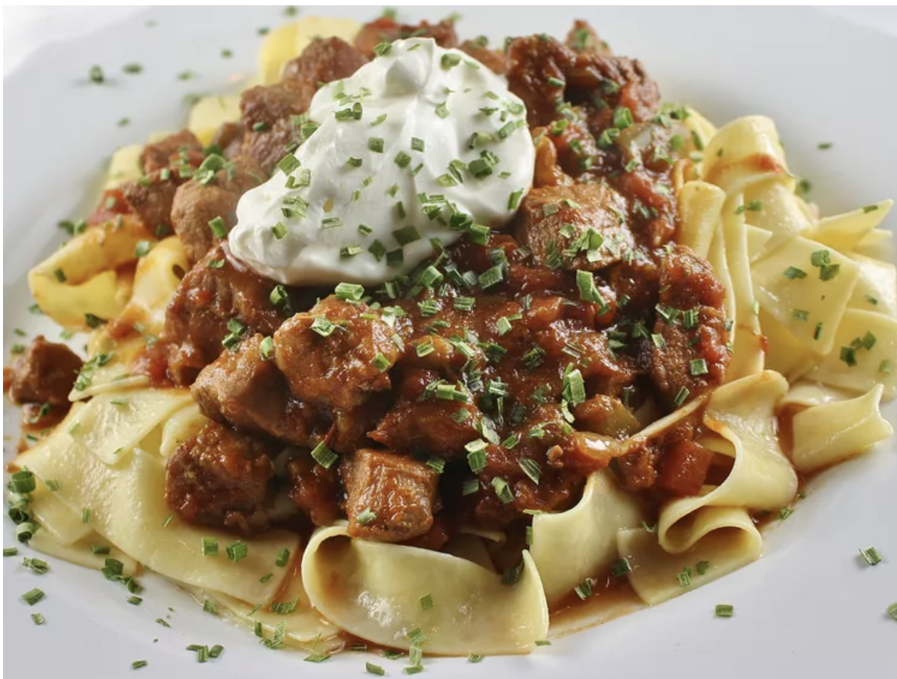

Porkolt

Fast and easy to make
Ingredients
- 2 large onions, diced
- 1/4 cup Hungarian paprika
- 1 1/2 teaspoons garlic powder
- 1/4 teaspoon ground black pepper
- 5 pounds boneless pork chops, trimmed
- 1 large yellow bell pepper, seeded and diced
- 2 14 ounce cans diced tomatoes, with liquid
- 2/3 cup beef broth
- 2 cups reduced-fat-sour cream
- 2 packages wide egg noodles
Steps
- Place the bacon in a large, deep skillet, and cook over medium-high heat until evenly browned, about 10 minutes.
Drain, and reserve the drippings. Add the onions to the bacon and cook together until the onion is translucent.
Remove skillet from heat and stir the paprika, garlic powder, and pepper into the bacon mixture. Transfer the mixture into a large stockpot.
- Heat a small amount of the reserved bacon drippings in the skillet again over medium-high heat.
Cook the pork chops in batches in the hot drippings until evenly browned on both sides. Use additional bacon drippings for each batch as needed.
Remove the pork chops to a cutting board and blot excess fat off the surface of the chops with a paper towel; cut into bite-sized cubes and stir into the bacon mixture.
- Heat a small amount of the bacon drippings in the skillet; cook and stir the bell pepper in the hot drippings until softened and fragrant; drain on a plate lined with paper towels.
Stir the cooked pepper into the bacon mixture.
- Pour the tomatoes with liquid and beef broth into a stockpot and place the pot over medium-high heat. Bring to a simmer and reduce heat to medium-low. Cook until the stew begins to thicken, stirring occasionally, about 90 minutes.
Stir the sour cream into the stew just before serving.
- Bring a pot with lightly-salted water and bring to a rolling boil; add the egg noodles to the water and return to a boil. Cook uncovered, stirring occasionally, until the pasta has cooked through, but is still firm to the bite, about 5 minutes.
Drain well in a colander set in the sink. Ladle the stew over the drained noodles to serve.